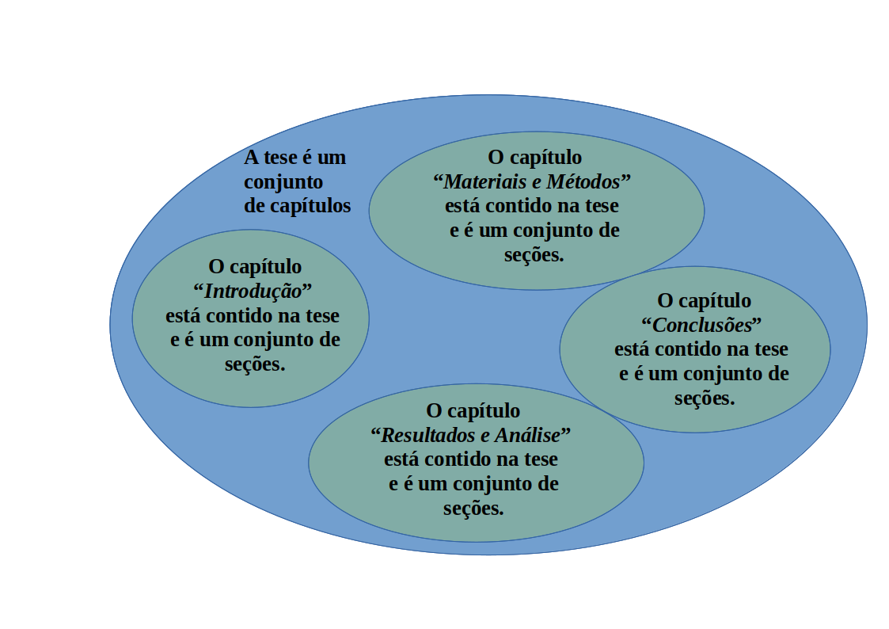
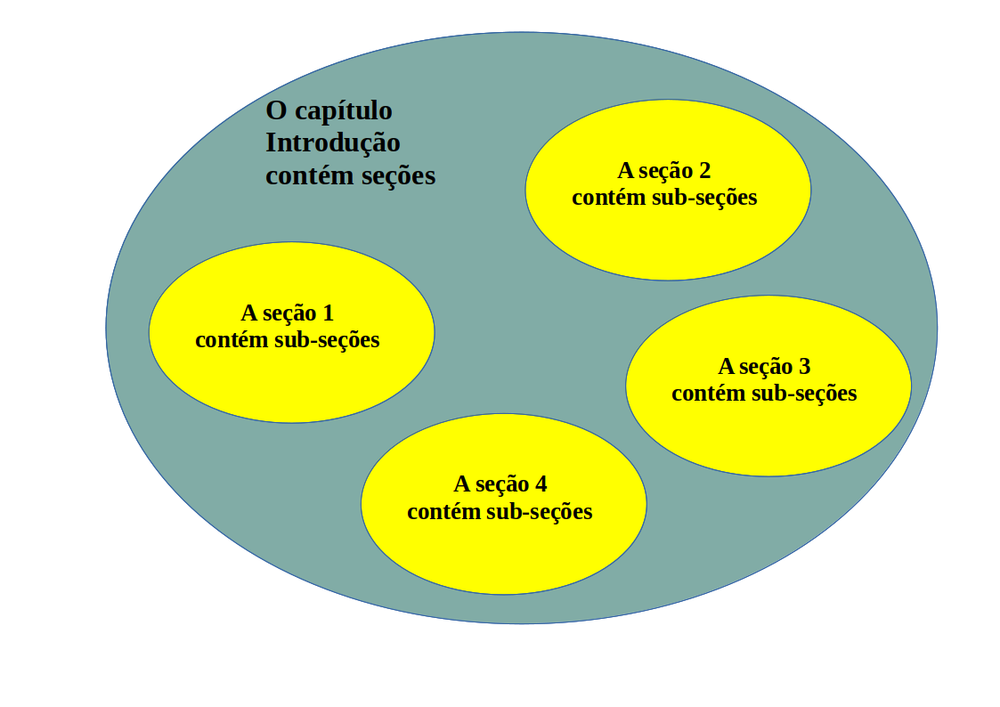
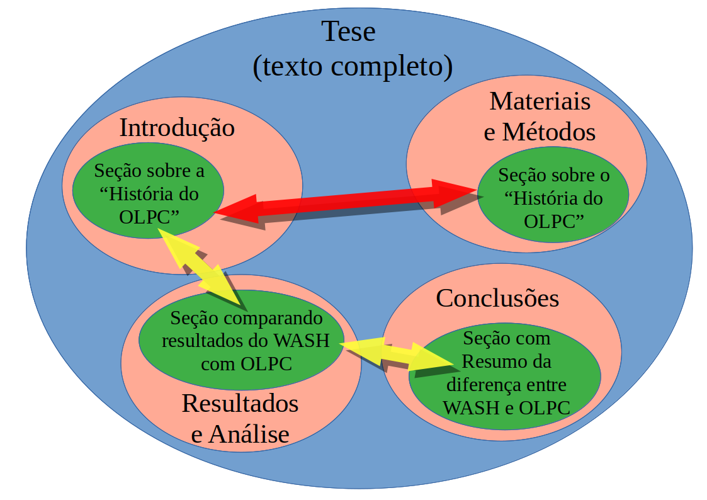
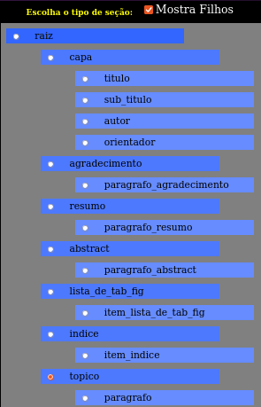
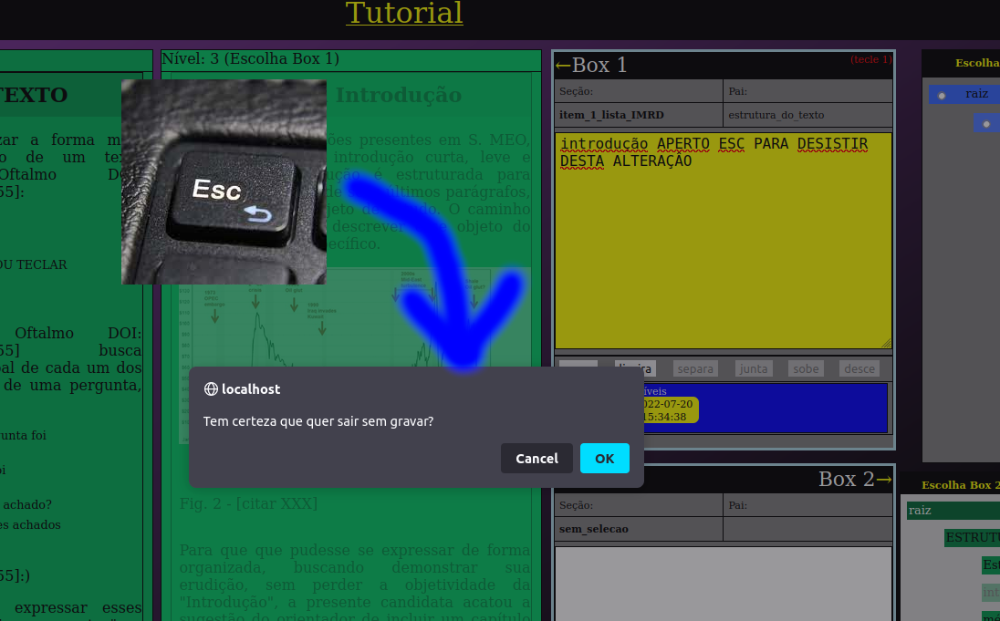

Forma vs. Conteúdo - A Taxonomia num texto científico - Manual do RedarTex
O presente documento é o manual do editor de textos RedarTex, criado por Victor Mammana.
Para citar esse documento:
V.P. Mammana; "Forma vs. Conteúdo - A taxonomia das abordagens em um texto científico", Cemaden, 2022
Introdução
Redigir um texto científico requer a organização de suas seções de forma a falicitar a compreensão pelo leitor, o que toma bastante tempo do autor. O problema é que o autor demora para consolidar uma compreensão de como o seu texto será organizado, causando uma extenuante espiral de criação e destruição de seções, parágrafos, capítulos.
Além disso, é necessária uma disciplina tipográfica que acaba atrapalhando o processo criativo, dado que dele tira muita energia, que é desviada para garantir a aparência do documento (tipo de letra, tamanho das letras, tipo de parágrafo, etc.).
Esta desfocalização ocorre justamente no momento em que toda a energia deveria estar voltada para a qualidade do conteúdo.
Desta forma, é comum que o uso de editores convencionais faça o autor se perder na organização de capítulos, seções, sub-seções e sub-sub-seções, negrito, itálico, margens, centralizações, etc., de seu texto.Por seu lado, a tipografia de documento é um assunto que requer muito conhecimento e deixá-lo a cargo do autor normalmente deixa o texto com baixa qualidade visual, sem tirar proveito da padronização, que facilita a leitura.
Uma solução clássica para evitar que o autor tenha que perder energia com a tipografia de seu documento é o uso do processador TeX.
Segundo a Wikipedia:
| O TeX é um sistema de tipografia desenhado e escrito principalmente por Donald Knuth[1] e lançado em 1978. (...) o TeX foi projetado tendo em vista dois objetivos principais: permitir que qualquer pessoa produza livros de alta qualidade com o mínimo esforço e fornecer um sistema que produza exatamente os mesmos resultados em todos os computadores em qualquer momento.[2] O TeX é um software livre, o que o torna mais acessível a um número maior de pessoas. |
Mas existe uma barreira de aprendizagem muito alta para o uso do TeX, ou de seu sistema de macros conhecido como LaTeX.
Normalmente, o pós-graduando que não vai seguir carreira acadêmica acaba fazendo apenas dois grandes textos durante a vida: a dissertação de mestrado e a tese de doutorado. Esta demanda acaba não justificando o investimento para vencer a barreira de aprendizado do TeX. Assim, ele fica relegado às dores de cair na armadilha de usar um editor tipo Wysiwyg, a exemplo do "Word" da Microsoft, situação que geralmente produz textos fora dos padrões editoriais e que tira o foco do conteúdo, como já dito.
O termo Wysiwyg tem origem no inglês é uma contração da frase What You See Is What You Get, ou seja, em tradução livre "o que você vê é o que você obtém". Em outras palavras, Wysiwyg significa que a tela do computador tenta mostrar, durante a edição do texto, exatamente a formatação que sairá na impressora. Mas para fazer isso, o usuário tem que se responsabilizar pelo controle da aparência do texto durante a edição do texto, interrompendo o trabalho a todo momento para configurar tamanhos de letras, espaçamento de parágrafos, alinhamentos, entre outras atividades que tomam muito tempo e que acabam não ficando padronizadas, porque o usuário acaba "esquecendo" o tamanho de letra que quer em cada situação de texto, por exemplo. Esse esquecimento exige que no processo de revisão do trabalho o usuário tenha que perder energia com revisão de formatação, quando todo o seu esforço de revisão deveria estar focalizado no conteúdo.
O TeX não é um editor Wysiwyg, porque o usuário edita em modo texto, sem formatação. O usuário só vai conhecer o resultado tipográfico da edição depois que o documento final for compilado, normalmente no formato PDF.
Umas das vantagens da forma não-Wysiwyg de editar textos é a padronização do resultado tipográfico, porque o PDF é um formato de arquivo que garante que a aparência do documento permanecerá a mesma, independentemente do sistema operacional, formato de tela, etc.
Por que o RedarTex foi criado?
O primeiro objetivo do RedarTex é criar um meio de diminuir essa barreira de aprendizagem do TeX, retirando as distrações que acabam emperrando o processo criativo de elaboração do texto, mas garantindo uma alta qualidade tipográfica no texto final da dissertação ou tese.
Um segundo objetivo do RedarTex é prover um meio de organizar as seções, criando um sistema otimizado de navegação pelas seções do texto.
Um terceiro objetivo do RedarTex é integrar ferramentas de Análise de Linguagem Natural em português para auxiliar a redação do texto e a identificação de erros de português, provendo índices de originalidade e melhorando a qualidade dos textos produzidos pela academia brasileira. Este terceiro objetivo ainda está em desenvolvimento.
Um quarto objetivo do RedarTex é permitir que o usuário se liberte dos editores convencionais do tipo Wysiwyg.
Um quinto objetivo do RedarTex é permitir a edição colaborativa do documento (ainda em desenvolvimento), em que o sistema "trava" regiões do texto para um único usuário, permitindo que a edição ocorra em vários pontos do trabalho, simultaneamente, sem que um usuário atrapalhe o "serviço" do outro.
A descrição abaixo tem o papel de especificação do sistema e por isso pode parecer um pouco complicada para o usuário final. Nesse caso, basta ler muitas vezes...
A utilização do sistema é, de certa forma, auto-explicativa, mas algumas características demandam um pouco de prática, como a navegação com as setas. Essa navegação foi desenhada para ser otimizada, no sentido de reduzir o número de passos (estados) para chegar nas funcionalidades desejadas, bem como o número de teclas necessárias para operar.
Por que existem capítulos, seções e sub-seções?
Será que as pessoas já se perguntaram por que é comum organizar textos em capítulos, seções, sub-seções, sub-sub-seções, etc.?
Há vários motivos para isso, mas os principais são:
- Agrupar ideias, assuntos ou abordagens semelhantes
- Facilitar a leitura não sequencial do texto, permitindo encontrar o ponto que se quer ler naquele momento
Estes dois motivos pedem uma abordagem taxonômica para a organização do texto, o que será descrito a partir de agora.
Conceito de Seção
O dicionário nos traz as seguintes definições de seção que são importantes para este documento (foram excluídas as que não são pertinentes ao tema aqui tratado):
Seção:
|
Portanto, seção para o presente texto é um "pedaço" do texto científico. A definição acima em negrito trata justamente do significado de seção para um texto científico. Um parágrafo é uma seção do texto, assim como um capítulo é também uma seção do texto. As seções de um texto costumam conter outras seções, criando uma hierarquização. Por exemplo: os capítulos contém parágrafos.
São exemplos de seções de um texto:
- Capítulos
- Índices
- Parágrafos
- Referências
- Seções
- Sub-Seções
- Sub-sub-Seções
- Imagens
- Gráficos
- Tabelas
- etc.
É curioso que a palavra "Seções" apareceu na lista acima. Esta é uma situação que pode gerar confusão porque existe um segmento do texto científico (portanto, uma seção do texto), que normalmente está situado um nível hierárquico abaixo do capítulo, que é comumente chamado de "Seção". Então, neste caso, "Seção" (espécie, com primeira letra maiúscula) é uma das seções (gênero, como todas as letras minúsculas) do texto.
As palavras "gênero" e "espécie" usadas acima estão sendo empregadas no contexto taxonômico: gênero é um conjunto de espécies. Portanto, os itens da lista acima são todos espécies do gênero seções, inclusive a espécie Seções.
Os capítulos, seções, sub-seções, etc. estão estruturados em níveis hierárquicos. Comumente o Capítulo contém as seções que, por sua vez, contém as sub-seções e assim por diante. Um capítulo não pode conter diretamente sub-seções. É necessário obedecer a ordem hierárquica, assim como um General comanda o Coronel, que comando o tenente.
Assuntos e Abordagens de Assuntos
O uso de níveis hierárquicos em textos científicos é consequência de sua estruturação na forma de uma "taxonomia de abordagens de assuntos". Garantir que o texto científico está organizado na forma de uma "taxonomia" facilita sua compreensão por parte do leitor.
Antes de abordar o termo "taxonomia", é preciso compreender o conceito de "abordagem de um assunto". Segundo o dicionário, abordagem é também:
| Abordagem: visão de um assunto; ponto de vista sobre uma questão; maneira ou método de enfocar ou interpretar algo. |
Assim, abordagem de um assunto é a maneira como esse assunto é interpretado ou analisado.
É possível ter um mesmo assunto abordado de diferentes maneiras ao longo de um texto científico. Ou seja, um mesmo assunto pode aparecer muitas vezes ao longo do texto, mas é recomendável que uma determinada abordagem daquele assunto apareça uma vez só, para evitar redundância, incoerência ou prolixia.
É justamente a organização taxonômica das "abordagens de assuntos" que vai evitar que essas se repitam indevidamente ao longo do mesmo. Dito isso, é preciso compreender que o capítulo de "Introdução" aborda os assuntos de um jeito, diferentemente dos demais capítulos, assim como o capítulo de "Materiais e Métodos" tem o seu jeito peculiar de abordar os assuntos, e assim por diante. Essa característica própria de cada capítulo é que dá a senha para que as abordagens de um determinado assunto não se repitam ao longo do texto.
Mas como a taxonomia ajuda o autor a organizar seu texto?
Taxonomia e Teoria de Conjuntos
A taxonomia é uma aplicação da teoria de conjuntos originária da matemática, através da qual se buscam formas de organizar o conhecimento em "conjuntos disjuntos dois a dois", ou seja, conjuntos que não têm elementos em comum.
Considere os conjuntos de letras abaixo:
| Nome do Conjunto | Conteúdo do Conjunto |
|---|---|
| Conjunto 1 | A, H, M, N, S |
| Conjunto 2 | B, O |
| Conjunto 3 | C, Y, J |
Os conjuntos 1, 2 e 3 definidos acima são "disjuntos dois-a-dois", porque não têm elementos repetidos.
Agora vamos analisar uma situção em que os conjuntos não são disjuntos dois a dois. Considere a tabela abaixo:
| Nome do Conjunto | Conteúdo do Conjunto |
|---|---|
| Conjunto 4 | A, H, M, N, S |
| Conjunto 5 | B, T, O, M |
| Conjunto 6 | C, Y, J |
Os três conjuntos acima não são disjuntos dois a dois, porque o Conjunto 4 e o Conjunto 5 contém a letra M e, portanto, a interseccão dos dois não é nula. Evidente que os Conjutos 4 e 6, quando considerados sem o Conjunto 5, são "disjuntos dois a dois", mas essa afirmação deixa de ser válida quando o Conjunto 5 passa a ser considerado também.
Agora que sabemos que uma taxonomia é uma forma de organizar o conhecimento em conjuntos disjuntos dois a dois, vamos ver na prática como isso funciona.
Vamos pensar num jeito de organizar veículos automotores em conjuntos. Vamos dividir os veículos entre "carros" e "motocicletas". Essa é um taxonomia funcional, porque carros têm exatamente 4 rodas e motos têm exatamente 2 rodas, portanto é impossível que uma elemento do conjunto carros apareça no conjunto motos, porque um dado veículo não tem como ter exatamente 4 rodas e exatamente 2 rodas ao mesmo tempo. O termo "exatamente" está sendo usado aqui no sentido de "nem mais nem menos do que um determinado valor". É muito importante usar o termo "exatamente" neste caso porque, de outra forma, carros poderiam estar também no conjunto de motos, porque carros têm 4 rodas, mas também têm duas. Claro que isso é um detalhe, mas é sempre importante tentar buscar o uso preciso da linguagem.
Agora vamos pensar em uma outra forma de agrupar veículos automotores em conjuntos: "carros", "motocicletas" e "veículos azuis". Essa não é uma taxonomia funcional, porque permite ter a repetição do elemento "carro azul" tanto no grupo "carros", porque "carro azul" tem exatamente 4 rodas, quanto no grupo "veículos azuis", porque "carro azul" é azul. Assim, a informação dividida nos três grupos indicados não forma conjuntos disjuntos dois a dois, dado que pelo menos 1 elemento aparece em dois conjuntos diferentes.
Assim, voltando aos textos científicos, podemos pensar nos capítulos de uma tese como conjuntos disjuntos dois a dois, todos contidos no conjunto "tese", e isto será detalhado a partir deste ponto.
Essa "taxonomia de abordagem de assuntos" pressupõe uma estrutura hierárquica, que vai sendo construída recursivamente até os níveis mais baixos e elementares. Na imagem abaixo o conteúdo do capítulo "Introdução" é mostrado.
Assim, os capítulos contém seções, que precisam respeitar a forma de abordagem pertinente a aquele capítulo, e as seções contém sub-seções que, por sua vez, também respeitam essa restrição. As sub-seções, por sua vez, podem conter sub-sub-seções e assim recursivamente.
Outra restrição complementar é a que determina que não é permitido usar a abordagem característica de um determinado capítulo (por exemplo, Materiais e Métodos) numa seção de outro capítulo (por exemplo, Introdução).
Isso significa, também, que a abordagem adotada para tratar um determinado assunto num determinado capítulo não se repetirá em outro capítulo para o mesmo assunto.
Veja essa restrição de "não repetição" representada no diagrama abaixo:
O diagrama acima mostra, por exemplo, que o assunto OLPC pode aparecer repetidamente ao longo das Seções dos capítulos do texto, desde que a repetição se dê através de abordagens diferentes (setas amarelas). Se a repetição ocorrer com a mesma abordagem (seta vermelha), então ela deve ser evitada.
Uma consequência importante dessas restrições é que a intersecção de dois capítulos diferentes vai resultar em um "conjunto vazio de abordagens de assuntos", ou seja, não existem abordagens de assuntos que se repetem dentre dois capítulos diferentes, mesmo que o assunto em si se repita.
É comum que um mesmo assunto seja tratado em dois capítulos diferentes, porque os capítulos precisam dialogar, mas a abordagem desses assuntos é que não se repete. Por exemplo: imagine uma tese sobre a história do Projeto WASH. É natural que o programa OLPC seja citado várias vezes em capítulos diferentes, mas as abordagens têm que ser diferentes, sob pena de ferir um princípio da Taxonomia.
Essa taxonomia de "formas de abordagem de assuntos" ajuda muito o leitor a organizar seus pensamentos quando está lendo: ele sabe que a forma de tratar um determinado assunto na Introdução não se repetirá nos demais capítulos, por exemplo. Isso traz ganhos em termos de concisão, rastreabilidade, organização e coerência, evitando redundâncias e conflitos de informação (e.g. seria desastroso se um conceito que se consolidou na "Introdução" fosse desconstruído na "Conclusão", deixando a tese incoerente).
Os níveis
O uso de uma "taxonomia de abordagem de assuntos" pressupõe que o texto será dividido em seções, começando pelos capítulos, os quais representam um conjunto de Seções (com maiúscula porque é espécie) que, por sua vez, representam individualmente conjuntos de sub-seções, estabelecendo uma hierarquia de níveis de seções (com minúscula porque é gênero). o
Capítulos estão todos no nível 1, ao passo que as seções estão no nível 2 e as sub-seções estão no nível 3. Os parágrafos, diferentemente, poderão estar vinculados diretamente ao capítulo, como é o caso do primeiro parágrafo do capítulo, mas podem, também estar vinculados às Seções ou sub-seções.
Portanto, é possível que um determinado parágrafo esteja no mesmo nível das Seções (espécie), ou seja, no nível 2. Outros parágrafos pode estar no mesmo nível das sub-seções, logo abaixo do nível das seções, situação em que estes parágrafos estariam no nível 3.
Ou seja, existem algumas espécies de seções (como é o caso de parágrafos ou de imagens), que podem estar em qualquer nível. Normalmente os parágrafos aparecem todos sempre antes do que as seções que estão no mesmo nível que ele, lembrando que estas seções contém seus próprios parágrafos. Não é comum um parágrafo que está no nível 3 aparecer depois de uma sub-seção (que está no nível 3).
Os níveis são identificados por números, sendo que o nível 1 é o mais alto e os números maiores são os níveis mais baixos.
Índices de Conteúdos
Os "Índices de Conteúdos" usados no início do texto, tanto em dissertações como em teses, são o meio de organizar visualmente essa "taxonomia", facilitando a busca não sequencial de informações no texto. Abaixo é reproduzido um trecho de índice obtido no site "Educação UmComo", o qual aqui será citado como exemplo:

Na imagem acima vemos os dois primeiros capítulos como nível 1:
- Exemplo de Capítulo: "INTRODUÇÃO"
- Exemplo de Capítulo: "PRESSUPOSTOS TEÓRICOS RELATIVOS À DEFICIÊNCIA"
Na imagem acima as seções estão como nível 2:
- Exemplo de seção: "Apresentação" (no Capítulo 1)
- Exemplo de seção: "Objetivos" (no Capítulo 1)
- Exemplo de seção: "Os tipos de deficiência" (no Capítulo 2)
- etc.
Na imagem acima as sub-seções estão como nível 3, a exemplo de:
- Exemplo de sub-seção: "Objetivo Geral" (no Capítulo 1, Seção 4)
- Exemplo de sub-seção: "A deficiência física" (no Capítulo 2, Seção 2)
- Exemplo de sub-seção: "Transtornos da linguagem" (no Capítulo 2, Seção 4)
- etc.
No exemplo da imagem acima o texto comporta sub-sub-seções, que estão como nível 4:
- Exemplo de sub-sub-seção: "A comunicação aumentativa e alternativa" (no Capítulo 2, Seção 2, Sub-Seção 1)
- Exemplo de sub-sub-seção: "O Sistema Braille" (no Capítulo 2, Seção 2, Sub-Secão 3)
- etc.
É importante notar que o exemplo citado se utiliza de numeração nas seções e sub-seções, além da numeração nos Capítulos. Desta forma, os capítulos têm um númeral antes do nome do capítulo, as seções têm 2 numerais separados por um ponto, as sub-seções têm 3 numerais separados por pontos e as sub-sub-seções têm 4 numerais, também separados por pontos.
Estrutura de níveis do RedarTex
A tabela abaixo associa um número a cada nível do texto:
| Nível | Capítulo ou Seção |
|---|---|
| 1 | Capítulo |
| 2 | Seção |
| 3 | Sub-Seção |
| 4 | Sub-sub-Seção |
A imagem abaixo mostra como os níveis estão organizados na interface do RedarTex.

O RedarTex suporta o encadeamento de sub-seções, com níveis maiores que 3, mas o autor não recomenda ainda o uso desse recurso, porque não foram testadas as consequências da exebição de muitos níveis em telas de computador pequenas, o que pode prejudicar a usabilidade.
Descrição da Interface
Abaixo vemos um "print" da janela principal do RedarTex

Na imagem acima vemos 5 regiões principais:
- Janelas de Nível: engloba as janelas que mostram as seções, organizadas em níveis. A Janela de Nível 1 tem o nível mais alto das seções, que no caso de uma dissertação, por exemplo, são os capítulos da dissertação. No formato dissertação normalmente há uma quebra de página nas seções do nível 1.
- Árvore de Seções: é uma forma diferente de ver as mesmas seções que são mostradas nas Janelas de Nível. Aqui todas as seções são mostrados numa mesma janela, organizadas por níveis no formato de árvore. Quanto mais à direita a seção, mais baixo é o nível, sendo que "raiz" é o nível 0.
- Box 1: mostra a seção que foi selecionada pelo cursor quando este estava em um Janela de Nível. Se o cursor muda de uma Janela de Nível para a Árvore de Seções ou para a Árvore de Tipos de Seções, o Box 1 continuará mostrando o conteúdo da última seção visitada em qualquer uma das Janelas de Nível.
- Box 2: mosra a seção que foi selecionada pelo cursor quando este estava na Árvore de Seções.
- Árvore de Tipos de Seções: mostra a hierarquia de tipos de seções, indicando quais as opções de filhos para uma determinada seção.
Navegação na Interface
O RedarTex foi desenhado para ser utilizado por meio do teclado. O motivo é reduzir o custo de operação associado aos "erros" de posicionamento característicos do uso do Mouse.
O mouse é um instrumento muito mais custoso em termos de usabilidade, uma vez que posicionar o cursor em um elemento da tela, seja um botão ou menu, requer correções sucessivas de posicionamento.
Experimente você mesmo: quando o usuário move o mouse para posicionar o cursor sobre um elemento da tela, é comum "passar do ponto", ou seja, o cursor vai além do elemento onde se desejava posicioná-lo. O usuário é obrigado a "voltar um pouquinho" e, não raramente, "passa do ponto" novamente, requerendo um novo ajuste. Esse processo diminui muito a eficiência de interação, trazendo custos motores e cognitivos para o usuário.
O teclado é muito mais eficiente na interação com a tela, desde que o usuário dedique um pouco de tempo para "aprender as teclas".
Quanto menos teclas para decorar melhor a experiência de interação.
Da mesma forma, a experiência para o usuário fica melhor se forem reduzidos os "estados" que precisam ser percorridos para acionar uma determinada função.
No RedarTex buscou-se otimizar essa interação, restringindo a operação ao uso das seguintes teclas, cujas funções serão detalhadas mais a frente:
- Setas (cima, baixo, direita, esquerda)
- Setas com Shift apertado
- PageDown
- Home
- Tab
- teclas "1" e "2"
- Escape ou ESC
- Espaço
Fluxo de navegação na interface
O fluxo de navegação nas janelas do RedarTex é controlado pelas setas direita e esquerda. O fluxo fica preso em um laço: quando o usuário atinge a última janela, volta para a primeira. Esse fluxo circular pode se dar tanto no sentido horário quanto no sentido anti-horário.
| Ao teclar a seta para direita a navegação ocorre no sentido ANTI-HORÁRIO |
Ao teclar a seta para esquerda a navegação ocorre no sentido HORÁRIO | ||
|---|---|---|---|

|

|
- Janelas de Nível
- Árvore de Seções
- Árvores de Tipos de Seções
A sequência acima é obtida teclando a seta para direita.
A sequência, no sentido horário, começando nas Janelas de Nível é:- Janelas de Nível
- Árvores de Tipos de Seções
- Árvore de Seções
A sequência acima é obtida teclando a seta para esquerda.
É importante notar que o número de Janelas de Nível mostrado na tela depende das características do documento apresentado e do radio button da Árvore de Tipos de Seções que está selecionado. Uma explicação detalhada sobre esses radio buttons é feita adiante.
Teclas
O RedarTex usa as seguintes teclas:
| Tecla | Função |
|---|---|
| Seta para Direita |
Acessa o nível inferior em relação à Janela de Nível atualmente selecionada, mudando o cursor para a próxima Janela de Nível à direita, mas isto só ocorre se houver um filho no nível inferior. Se estiver no nível mais baixo do texto (e.g. sub-sub-seção), ou se a seção atual não tiver filhos no nível inferior, acessará a Árvore de Seções. Se estiver na Árvore de Seções, acessará a Árvore de Tipos de Seções. Ao acessar o próximo nível, o cursor recai sobre a primeira seção numa hierarquia inferior (filho). Se o cursor está numa seção que não tem hierarquia inferior (e.g. "paragrafo"), então o cursor vai direto para a Árvore de Seções. Se a seção onde estava o cursor, antes de teclar a seta, é do tipo parágrafo, então não há filhos e ao teclar seta para direita, o cursor irá para a árvore de seções. Se a seção onde estava o cursor, antes de teclar a seta, era do tipo tópico, e se esse tópico tiver filhos, então ao teclar a seta para a direita, o cursor recairá sobre o filho. Se a tecla Shift estiver pressionada, então o cursor recairá sobre o último visitado naquele nível. |
| Seta para Esquerda |
Acessa o nível superior ao atualmente selecionado, mudando o cursor para a Janela de Nível à esquerda, caso o nível atualmente selecionado não seja o mais alto (caso não seja o nível de capítulos - nível 1). O cursor recairá sobre o "pai" da seção. Se estiver no primeiro nível ("nivel_1"), acessará a Árvore de Tipos de Seções. Se estiver na Árvore de Tipos de Seções, acessará a Árvore de Seções. Se o cursor estava na Árvore de Seções, então o cursor recairá sobre a última seçào visitada naquela particular Janela de Nível. Se o cursor estava na Árvore de Tipos de Seções, ao teclar seta para esquerda o cursor recairá sobre a última seção visitada na Árvore de Seções. |
| Seta horizontais (direita/esquerda) + Shift |
Quando aperta o shift juntamente com a seta e o cursor está em qualquer um dos "niveis", o cursor recai sobre o último visitado. Quando está em Árvore de Seções, ou em árvore de tipos de seçòes, o comportamento não se altera em relação a não pressionar shift. |
| Seta verticais (para cima e para baixo) |
As setas para cima e para baixo movem o cursor num mesmo nível acessando a seção anterior ou inferior, respectivamente. Se o cursor já estiver na primeira seção e a seta para cima for acionada, o cursor se moverá para a última seção daquele nível. Se o cursor estiver na última seção daquele nível e a seta para baixo for acionada, o cursor se moverá para a primeira seção daquele nível. Se o cursor estiver numa janela de nível, o conteúdo da seção é mostrado no Box 1. Se o cursor estiver na janela de árvore de seções, então o conteúdo da seção é mostrado no Box 2. Note que o cursor na janela de níveis nunca acessa uma seção que já tenha sido selecionada pela árvore de seções. |
| Home | A tecla Home leva para a primeira seção do nível selecionado. |
| PageDown | A tecla PageDown leva para a primeira seção tópico que tenha um filho do nível selecionado. |
| "1" |
A tecla "1" faz a seção selecionada pela janela de níveis entrar no modo de edição através do Box 1. O Box 1 é uma janela para alterar o texto da seção selecionada pelo cursor amarelo nos níveis da janela de níveis. Basta teclar "1" e começar a digitar para que o texto seja alterado. Mas o texto não estará salvo. Para salvar é preciso teclar "Tab". Se quiser abandonar as alterações é preciso teclar "Esc". Quando o sistema entra em modo edição pelo acionamento da tecla "1", as setas não mais permitem movimentar o cursor pelas seções porque a partir desse ponto serão usadas para "navegar" pelo texto que está no Box 1. Quando qualquer tecla for acionada no modo edição, a janela ficará amarela, indicando que a edição começou e precisa ser gravada para não perder o trabalho já feito. Portanto, nesse modo as setas passam a servir para movimentar o cursor dentro do campo de edição do Box 1. Abaixo do texto de edição do Box 1 estão pequenas caixinhas que mostram as várias versões gravadas daquela seção. Ao entrar no Box 1 com "1" é possível navegar pelas versões gravadas usando shift-setas, desde que o box não tenha começado a ser editado. Se vc quiser navegar nas versões com shift-setas, e já estiver editando o texto, isso só será possível se vc teclar Esc, saindo do modo edição e entrando de novo com "1", mas sem digitar alguma tecla que leve o sistema a editar o texto da seção. |
| "2" |
A tecla "2" faz a seção selecionada pela árvore de seções entrar no modo de edição através do Box 2. O Box 2 é uma janela para alterar o texto da seção selecionada pela àrvore de seções, diferentemente do Box 1, que serve para editar o texto selecionado pelo cursor nas janelas de níveis. Depois de selecionar o texto que quer editar na janela de árvore de seções, basta teclar "2" e começar a digitar para que o texto seja alterado. Mas o texto não estará salvo. Para salvar e impedir que a alteração seja perdida, é preciso teclar "Tab". Se quiser abandonar as alterações é preciso teclar "Esc". Se o cursor estiver na Árvore de Tipos de Seções quando a tecla "2" for acionada, então o Box 2 entra em modo de inserção de uma nova seção, que pode ocorrer antes, depois ou abaixo da seção atual, dependendo do botão da janela Box 2 que for acionado com o mouse. Quando o sistema entra em modo edição pelo acionamento da tecla "2", as setas não mais permitem movimentar o cursor pelas seções. As setas passam a servir para movimentar o cursor dentro do campo de edição do Box 2. Os efeitos de edição descritos no box 1 acima valem para o Box 2, exceto na questão de inserção de uma nova seção. |
| Tab |
Se o sistema estiver em modo de edição, ou seja, se a tecla "1" ou a tecla "2" foram acionadas e o texto dos Box 1 ou 2 foi alterado, então a tecla "Tab" gravará uma nova versão do trecho, sem prejuízo para as demais. O RedarTex nunca apaga uma versão que é mantida indefinidamente. |
| Escape ou Esc | Permite sair do modo edição sem gravar. Ou seja, se o sistema estiver em modo edição, ou seja, se as teclas "1" ou "2" foram acionadas para permitir a edição nos Box 1 ou 2, ao acionar a tecla "Esc" o sistema sai do modo edição e o cursor pode voltar a ser movimentado com as setas. |
| Espaço | Se o editor não estiver no modo ediçào, ou seja, se não foram usadas as teclas "1" ou "2", então é possível transpor a seleção nas janelas de nível (janelas verdes) diretamente para a janela de Árvore de Seções, sem o uso da seta para a direita. Nesse caso, a seleção na janela de níveis é diretamente apresentada na Box 2, e a Box 1 passa a apresentar a seleção anterior, para evitar que Box 1 e Box 2 apontem para a mesma seção. |
Cliques
Existem algumas ações que só estão disponíveis mediante cliques.
Você pode clicar na bolinha branca que fica à esquerda do nome do tipo de seção, na Árvore de Tipos de Seções. Ao fazer isso, o sistema muda o modo de visualização. Por exemplo, ao clicar ao lado de "capa", apenas as seções relacionadas à "capa" serão mostradas. Se clicar em "topicos" apenas a estrutura de tópicos será mostrada. Para mostrar a estrutura de tópicos juntamente com seus parágrafos, é preciso selecionar o checkbox "Mostrar Filhos" na janela de Árvore de Tipos de Seções.
Ao passar o mouse sobre uma seção, uma janela "fantasma" aparecerá por um tempo curto, mostrando algumas das características daquela seção.
Seletor de tipos de seções: Radio Button
O RedarTex tem uma estrutura configurável de texto, com a possibilidade de definição de uma hierarquia de tipos de seções. A janela da Árvore de Tipos de Seções mostra como é essa hierarquia: Na imagem vemos todos os tipos de seções que podem estar presentes, ou não, eu um texto editado pelo RedarTex. Diz-se que a árvore de tipos de seções tem todas as seções que "podem estar presentes ou não", porque o fato daquele tipo de seção existir na árvore de tipos não significa que o autor decidiu incluí-la no texto. Um exemplo é o tipo de seção "imagem". Nem toda dissertação tem imagens e, apesar desse tipo estar na árvore de tipos de seções, não estará presente nas janelas de níveis ou na árvore de seções.
A estrutura de árvore de tipos de seções presente na figura tem base em publicações sobre estruturação de textos científicos, em particular teses. Essa estrutura poderia ser modificada, uma vez que o RedarTex é configurável.
Os tipos de seções são representados por retângulos azuis contendo um nome e uma bola branca do lado esquerdo. Essa bola branca é do tipo radio button e é "clicável".

Na imagem acima a elipse amarela está indicado um conjunto de radio buttons de alguns netos da raiz: título, sub_titulo, autor e orientador.
A raiz é o pai de todos os tipos de seções.
Todos os tipos de seções são filhos ou netos de raiz. A estrutura de texto atualmente em uso no RedarTex não apresenta bisnetos de raiz por uma questão de simplicidade, embora o sistema preveja essa possibilidade.
São exemplos de filhos de raiz:
- capa
- agradecimento
- índice
- tópico
São exemplos de netos de raiz:
- título
- paragrafo_resumo
- item_indice
- parágrafo
Nesta janela vemos também o checkbox Mostra Folhas.
Para explicar esse checkbox é preciso entender o conceito de folha no contexto da estrutura de dados Árvore. Uma explicação sobre Mostra Folhas será feita mais adiante, mas antes é preciso entender qual é o efeito de "clicar" no radio button da janela da Árvore de Tipos de Seções.
O que acontece quando "clico" no Radio Button?
Vimos que do lado esquerdo de cada tipo de seção da Árvore de Tipos de Seções existe uma bola branca "clicável" do tipo radio button.
O resultado de "clicar" num radio button dessa árvore depende do estado do checkbox Mostra Folhas.
Para compreender melhor o efeito vamos considerar que o checkbox Mostra Folhas não esteja marcado, como mostrado na figura abaixo:

Vamos agora ver o resultado de "clicar" no radio button que fica logo ao lado do tipo de seção topico.

Na imagem acima, o pequeno círculo amarelo à direita mostra o radio button do tipo de seção topico que foi clicado quando o checkbox Mostra Folhas não estava marcado. Vemos que o RedarTex está mostrando a estrutura de tópicos do texto.
Mais adiante veremos o que acontece se o radio button de um tipo de seção for clicado quando o Mostra Folhas estiver marcado, mas antes de entrar nisso, é preciso compreender os conceitos de árvore, raiz e folhas.
Conceituação: Árvore, raiz e folhas
Árvore é uma estrutura de dados que permite organizar a informação de forma hierárquica. Esse tipo de estrutura de dados é particularmente útil quando se quer "categorizar" dados, particularmente quando se quer mostrar taxonomias.
A definição de árvore é bem simples. Considerando que uma árvore é um conjunto de elementos abstratos, podemos definir árvore como:
| Árvore é um conjunto de elementos que são hierarquizados pela ideia de "paternidade": todo elemento tem um único pai, exceto o elemento raiz. |
Uma folha, em linguagem de estrutura de dados, é o filho que não tem filhos.
Textos científicos são estruturas em árvore
O fato de textos científicos poderem ser considerados como um "taxonomia de abordagens de assuntos" os torna exemplos naturais da estruturação em árvore.
|
Como um texto científico tem suas seções hierarquizadas em níveis de conjuntos disjuntos dois a dois, a estrutura de árvore é a escolha natural para representá-lo. |
Folhas: os filhos sem filhos
No RedarTex um típico caso de "seção" que não tem filhos é o parágrafo. O parágrafo é um exemplo de nível mais baixo de seção, porque não existem seções dentro do parágrafo e é por isso que ele é compreendido como uma folha da árvore, assim como uma folha de uma árvore real é o "fim" da árvore.
Em outras palavras, o parágrafo não tem filhos e por isso é o fim da "árvore de seções".
Outro exemplo de "seção" que não tem filhos é o tipo de seção imagem:

O tipo de seção imagem permite colocar uma figura no texto e, portanto, não permite seções dentro dele e é por essa razão que é considerado uma folha da árvore.
Outros tipos de seções que são considerados como "folhas" são, por exemplo: item_indice, citacao, chama_ref, etc.
Efeito do Mostra Folhas
Quando o checkbox Mostra Folhas é marcado, as folhas são mostradas nas Janelas de Nível.
Compare as duas imagens abaixo. A da esquerda foi obtida após clicar no radio button do tipo de seção tópico, presente na janela Árvore de Tipos de Seções,.
| Resultado de clicar no radio button localizado ao lado de topico, quando Mostra Folhas está marcado. | Resultado de clicar no radio button localizado ao lado de topico, quando Mostra Folhas NÃO está marcado. |
|---|---|

|
|
| As folhas (no caso são parágrafos) estão sendo mostradas, o que permite fazer a leitura do texto. | As folhas (parágrafos) não estão sendo mostradas, o que facilita a visualização da estrutura hierárquica do texto. |
Importante observar que as folhas sempre são mostradas na janela Árvore de Seções e o checkbox Mostra Folhas não afeta o comportamento da janela Árvore de Seções.
Como alterar com o Box 1
Para alterar o conteúdo de uma seção usando o Box 1, é preciso mover o cursor amarelo sobre a seção desejada nas janelas de níveis. Note que ao mover o cursor sobre as seções da janela de nível, o campo de edição de Box 1 começa a mostrar exatamente o mesmo texto da seção selecionada.
A figura abaixo mostra uma situação em que o cursor amarelo está sobre uma seção no nível 3. A seta azul está mostrando que o Box 1 sempre mostra o conteúdo da seção que está selecionada na janela de níveis.

Quando a seção que se quer alterar estiver selecionada e o Box 1 também estiver mostrando o seu conteúdo, basta teclar "1" e a janela Box 1 estará disponível para edição, sem a necessidade de clicá-la.

Ao começar a digitar, o texto de Box 1 já começará a ser alterado, mas ainda não está sendo gravado. O campo de edição do Box 1 ficará amarelo para indicar que houve uma indicação, situação mostrada na figura abaixo:

Para gravar as alterações, é preciso teclar Tab. Uma janela de gravação aparecerá no meio da tela por cerca de 3 segundos, como mostrado na imagem abaixo:.

Note que logo após teclar TAB, a seção mostrada na Janela de Níveis já fica com a alteração realizada na janela Box 1, como mostrado na figura abaixo:

Se ocorrer a desistência das alterações, ou seja, se o usuário não tiver interesse em gravar as alterações, ele não deve teclar TAB, mas teclar ESC. Quando ele teclar ESC uma janela de confirmação será ativada, perguntando se o usuário realmente quer desistir da gravação. Se ele optar por não gravar, as alterações serão perdidas para sempre.
Quando o usuário decide gravar usando a tecla TAB não ocorre perda da versão anterior. Uma nova versão do texto é gravada, mas as antigas não serão perdidas.
As várias versões do texto da seção são gravadas por tempo indeterminado, podendo ser acessadas através do retângulo azul logo abaixo do campo de alteração do Box 1, como mostrado na figura abaixo:

Para acessar as versões anteriores basta mover o cursor amarelo para a seção desejada, teclar "1" e ANTES de iniciar qualquer alteração, teclar SHIFT setas horizontais, de forma a selecionar a versão desejada. Quando a versão desejada estiver selecionada, basta teclar TAB e ela passa a ser a válida.
Como inserir referências
O RedarTex tem um sistema de referências que não é baseado no bibtex.
O motivo é que o RedarTex tem uma estrutura de árvore bem robusta, que no futuro permitirá guardar as referências dentro dos preceitos da orientação a objetos.
As referências no RedarTex são armazenadas no capítulo de Referências que sempre está presente. O formato de inserção das referências deve ser sempre:
[autor, ano] Referência no formato ABNT
Então basta gerar a lista de referências no capítulo de referências usando a técnica de inserção de novos "item_de_referencia" no Box 2, seguinto o formato acima.
Posteriormente o formato acima será melhorado para que os dados de referências possam ser armazenados de forma estruturada em XML.
Como usar as referências já inseridas
Para usar as referências já inseridas, basta mover o cursor amarelo sobre o parágrafo onde se quer inserir a referência, apertar 1 para liberar a edição no Box 1 e mover o cursor no local onde se quer inserir a referência. Quando estiver com o cursor no local certo, basta teclar Shift-Ctrl * e uma janela de seleção de referências surgira. Neste ponto é só selecionar a referência desejada (é possível digitar algum trecho da referência para facilitar a busca), e na sequência usar as setas para buscar a referência, teclando enter para selecioná-la. Não adianta usar o mouse: o dropbox de seleção de referências não foi feito para ser operado pelo mouse.
Você também pode inserir referências através do Box 2.
Como separar um parágrafo
Imagine que você quer separar um parágrafo em dois. Basta selecionar o parágrafo nas janelas de níveis, apertar 1, colocar o cursor onde quer separar e clicar no botão "separa".
Como buscar palavras no seu texto
Para buscar palavras é preciso selecionar o tipo "raiz" na janela de Tipos de Seções:

Quando você clicar no tipo "raiz" da janela de Tipos de Seções, um box de texto será mostrado no topo da página:

Logo abaixo desse box de texto é apresentado o número de seções do seu texto, como mostrado na imagem abaixo:

Para buscar uma palavra, basta teclar a letra B ou clicar a caixa de texto. Ao final da digitação da palavra que se quer buscar, é preciso teclar Enter ou clicar no botão busca, que fica logo ao lado da caixa de texto. O sistema buscará as seções que contém aquela palavra, mostrando-as na Janela de Níveis.
Para interromper uma busca, basta teclar Escape, e a lista completa de seções será mostrada novamente.
Outra forma de interromper é clicar em qualquer um dos tipos de seções presentes na Janela de Tipos de Seções.
A busca não faz diferença entre maiúsculas e minúsculas e também não considera acentuação.
Quando a lista de resultados da busca estiver sendo apresentada, é possível editar os conteúdos normalmente, usando a janela Box 1. O status da janela Box 2 nessa condição ainda não foi definido.
Como inserir uma nova seção
Para inserir uma nova seção é preciso escolher o ponto de inserção na janela de Níveis. O usuário poderá escolher se quer inserir antes ou depois do ponto de inserção.
Para escolher o ponto de inserção, o usuário deve usar as setas. Quando o cursor estiver no ponto de inserção, basta teclar Espaço e o cursor pulará da Janela de Níveis para a Janela de Árvore de Seções. Neste ponto basta confirmar que se quer inserir mesmo naquele lugar e isso é feito com a seta para direita. Ao teclar a seta para a direita, o cursor saltará para a Janela de Tipos de Seções, onde o usuário poderá escolher o tipo da seção que ele deseja inserir. O sistema permite a inserção apenas de subseções pertinentes ao ponto de inserção selecionado.
Quando o cursor estiver sobre o tipo de seção desejado (e.g. imagem), basta teclar "2" e o Box 2 está disponível para a inserção da imagem, ou outro tipo pertinente ao status do momento. Se o objetivo é inserir uma figura, então é preciso clicar na opção arquivo. Uma janela de seleção de arquivo surgirá, através da qual o usuário consegue selecionar a imagem desejada. Neste ponto, basta clicar ok e o nome do arquivo selecionado aparecerá no Box 2. Se o usuário quiser realmente a imagem, basta clicar no botão de posição pertinente: antes ou depois.
Como guardar um backup do documento
O RedarTex é baseado em base de dados relacional. Os seus dados são guardados em formato SQL. Para que seja possível guardar a estrutura do texto existe uma ferramenta para fazer um dump parcial dos dados. Este dump é parcial porque não armazena os comandos SQL de criação da base, que estão num arquivo separado.
O dump parcial fica armazenado no servidor, na forma de arquivo, mas também é disponibilizado para o usuário, que pode fazer um "selecionar tudo" seguido de "copiar" para obter o script localmente.
A recuperação do dump parcial é feita pelo administrador do sistema, em caso de necessidade. O usário pode fazer quantos dumps quiser.
O dump parcial não armazena as imagens que foram subidas no servidor. É assumido que o usuário tem cópia de suas imagens, uma vez que teve que subí-las para o servidor.
Para gerar o dump parcial é preciso clicar no botão grava_backup_sql que fica na barra superior da tela.
Shortcut para inserir uma nova seção: I ou i
O caminho de inserção de uma nova seção é um pouco desajeitado. Para ficar mais fácil, foi criado um shortcut, que é a letra i, também na versão maiúscula.
Ao apertar a letra "i" será inserida uma seção do mesmo tipo da seção marcada pelo cursor no momento em que a tecla "i" foi acionada.
Ao apartar a tecla "i", a inserção se dará no Box 2.
Relatório de Testes
Shortcut I para inserção de novo item
2022_09_02 - Foi detectado um problema quando o cursor está sobre um seção do tipo topico. Foi preciso colocar um bloqueador na função, para só permitir a inserção quando estão em um filho de tópico, a exemplo de "paragrafo, chama_ref, citacao, imagem, etc.".
2022_09_02 - Ainda existe um comportamento da UIX desconfortável que é: quando se tenta inserir no primeiro item de um nível, é acionado um scroll que mostra o último item do nível, criando uma bagunça mental no usuário. Existe uma lógica: quando vamos inserir um item, o cursor pula para a árvore de seções, na mesma seção em que estava na janela de níveis. Isso obriga que o item selecionado em Box 1 seja o anterior ao primeiro, que já está selecionado na árvore de seções. Isso significa o último da janela de níveis e, portanto, um pulo de scroll para o final da janela. Não tem nada de errado com a lógica, só que é desconfortável. A solução é evitar esse pulo, jogando o cursor para o próximo, ao invés de mandar para o anterior. Assim, quando for inserir na primeira seção, o cursor da Janela de Níveis vai para o segundo item do nível, enquanto o cursor na Árvore de Seções vai para o primeiro item do nível. CORRIGIDO: foi mudada a ação no caso de y ser menor 0, como segue:
if (y < 0) {y=1;}
Mandar paragrafo para lixeira
2022_09_02 - Ao selecionar uma seção do tipo "paragrafo" com o cursor na janela de níveis, é possível apagar usando o botão "lixeira" da Box 1. O parágrafo é enviado para o capítulo ad-hoc de "lixeira". Verifiquei várias vezes para diversos níveis. Falta verificar a situação para uma deleção do tipo "topico". Será que a árvore inteira vai para a lixeira?
Mandar topico para lixeira
2022_09_02 - Experimentei com o tópico "Exemplificação de uma possível organização deste texto" e consegui mandar para a lixeira clicando no botão lixeira do Box 1, quando o tópico estava selecionado com o cursor na janela de níveis. Verifiquei na lixeira e a subárvore inteira foi enviada para a lixeira.
Bugs conhecidos e outras Restrições
Colocar aspas numa seção do tipo "topico" produzirá um erro no Latex, se estas aspas estiverem colodas nas "chaves" ("{}"). Evite colocar aspas em "topicos".
Imagens múltiplas
Para inserir múltiplas imagens é preciso inserir o tipo de secão "mult_imagem" e depois inserir as imagens, uma a uma, depois de "mult_secao".
O tipo de seção "mult_imagem" funciona como um tag de formatação que não requer terminador (mult_imagem não pode ser usado como terminador de uma sequência de imagens múltiplas). Quando o gerador de LATEX encontra o tag "mult_secao", todas as imagens que vierem na sequência, serão colocadas lado a lado, em uma página. Ainda não são conhecidos os efeitos de uma quantidade muito grande de imagens.
Sempre coloque um parágrafo antes do tag mult_imagem. Isto não é um bug.
Você pode usar mult_imagem antes de uma imagem único, o que vai controlar o tamanho da imagem. Mas você pode não usar, e o tamanho da imagem dependerá do tamanho do arquivo. Além disso, se não usar a tag mult_imagem as imagens ficarão independentes, caindo em lugares do texto definidos pelo latex.
Apagar múltiplas seções
Gerar saída DOCX Word
O sistema gera DOCX no botão "grava WORD DOCX". Observe que o DOCX gerado é baseado na última geração do Latex. Portanto, se você fizer uma alteração no documento e não gerar no Latex, a última alteração não aparecerá no DOCX.
Como gerar tabelas
Para gerar tabelas é preciso inserir uma tabela por meio da Box 2, como é feito para qualquer outro tipo de seção. Recaptulando: escolha a seção sob a qual quer inserir a tabela. Aperte espaço e depois seta para a direita. Quando o cursor estiver no seletor de tipo de seção, escolha com as setas para cima e para baixo o tipo "tabela".
Quando o tipo "tabela" estiver selecionado, aperte "2" para selecionar a inserção pelo Box2.
Normalmente o Box 2 considera que o "enter" é para gravar a nova seção abaixo da atual. Mas quando o tipo é "tabela" o "enter" não mais é usado para gravar o conteúdo de Box 2. Agora o usuário pode criar a sua própria tabela digitando as células da tabela separadas pelo símbolo "|" e as linhas separadas por "enter".
O interpretador vai mostrar a tabela na janela de níveis assim que o botão "antes" ou "depois" for apertado.
Aspas duplas no Latex
Para conseguir abrir e fechar aspas no latex é preciso usar o símbol backtick duas vezes (abrir) e apóstrofo duas vezes(fechar). Mas isto está dando problema com o textarea. Melhor não usar por enquanto porque é um bug.
Como criar um tópico novo
Para criar um tópico novo, ao que tudo indica (mas precisa ser mais testado), basta ir sobre a seção abaixo ou abaixo da qual se deseja criar o tópico, teclar espaço, selecionar tópico no seletor, apertar 2 e digitar o texto do tópico.
Como inserir um parágrafo dentro de um tópico
Para inserir um parágrafo dentro do tópico é preciso usar o "i", e entrar o texto no Box 2. ao terminar, é preciso clicar em "dentro". O sistema provavelmente sofrerá um crash por conta de um bug em análise, mas os dados estarão gravados. Basta recarregar a página para ver como ficou.
Como criar um diagrama MER
Para criar um relação do tipo MER no RedarTex, insira uma seção do tipo "diagrama_MER", com três palavras separadas por 2 barras verticais (pipe).
Note que é possível criar diagramas ternários, selecionando o tipo de seção "diagrama_MER_3ario", e quaternários, selecionando o tipo de seção "diagrama_MER_quad". O primeiro nome, antes da primeira barra vertical, é sempre a entidade mais à esquerda, o segundo nome, separado por barras verticais é sempre o relacionamento do Diagrama MER e os demais nomes são as entidades. Um diagrama MER quaternário deve ter 5 nomes e um ternário deve ter 4 nomes, sempre separados por barras verticais.